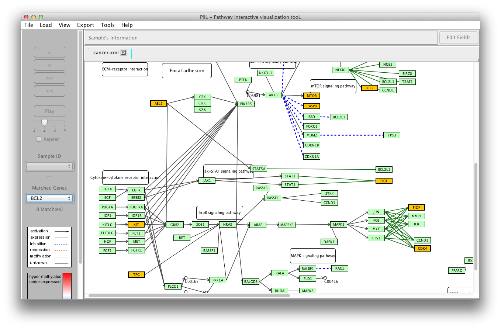

PiiL your data and cite us, please.
Run PiiL
Open a KGML file
Load methylation data
Load expression data
Load samples information
Right-click menu options
Highlight a set of genes in a pathway
Export pathway to image
Export list of matched genes in each pathway
Duplicate the current pathway in a new tab
Take a snapshot from PiiL
Cite us
Know what the name PiiL means
To run PiiL on Mac just double-click on the PiiL.jar file. For
Windows and Linux platforms, open a terminal, go to the directory
that you have PiiL.jar file and run "java -jar PiiL.jar".
There are two options to open a KGML file:

1) Open an already downloaded KGML file from your hard drive.
2) Open it from by selecting the pathway and organism name from
the KEGG database. This will download the file and for the next
time will use the downloaded file.

Having open a pathway, you can load your meta-data over that
pathway. If you have a chip's methylation data, replace the CpG
sites in the first column with their annotated gene name.
Additional annotation data (for example if the CpG site lies in a
exonic, intronic, ... region of the gene) can come after an
underscore in the first column. Columns must be tab separated and
the first row lists the samples IDs. The beta values are between 0
and 1.
A valid input file lookes like the following:
| sampleIDS |
sample1
|
sample2
|
...
|
sampleN |
| GeneA[_exonic] |
beta_value |
beta_value | ... |
beta_value |
| GeneB[_intronic] |
beta_value | beta_value | ... |
beta_value |
| ... |
... |
... |
... |
... |
| GeneX[_upstream] |
beta_value |
beta_value |
... |
beta_value |
To load your methylation data, you can either click on New or any
of previously loaded methylation files listed under Load
-> Methylation.

Genes and their expression values are the second type of
meta-data that you can load on your pathway of interest. Make sure
the input file is tab separated with sample IDs on the first row
and gene names on the first column. For each gene, the expression
values appear on its following columns.
A valid input file lookes like the following:
| sampleIDS
|
sample1
|
sample2
|
...
|
sampleN |
| GeneA |
expression_value |
expression_value | ... |
expression_value |
| GeneB |
expression_value | expression_value | ... |
expression_value |
| ... |
... |
... |
... |
... |
| GeneX |
expression_value | expression_value | ... |
expression_value |
To load your gene expression data, you can either click on New or
any of previously loaded expression files listed under Load
-> Gene Expression.

If the samples in the loaded meta-data files have additional
information like gender, age, ehtnicity, etc. you can load the
file with matched sample IDs and the additional data will be shown
for each sample.
Samples information can be loaded from Load -> Samples
information menu, by choosing new or a previously
loaded samples information file. In the form that shows up choose
the columns separator, number of fileds (columns), the column
containing sample IDs, and the fileds that you like to be shown.


A menu is available for all the genes when you right-click on the gene rectangle. The first option is Check this gene on ... which is enabled for all the genes. This opens a tab in the default browser and checks the target gene's information on your selected database: GeneCards, Pubmed or Ensemble.

The second option Histogram for all samples makes
a histogram for the beta-values or expression values of all
samples for the targeted gene.

The third option Barplot for raw data is another representation of beta-values or expression values for all samples.


If you have a list of genes and want to check the overlap of this
list with a pathway of interest, first open the pathway and then
select Load -> List of genes to load your
file. The genes that exist in the targeted pathway will be
highlighted with a red text and red border.

In addition to the function of exporting pathways and their
visualized metadata, you can take a snapshot of PiiL in different
image formats by selecting Tools -> Take a snapshot of
PiiL.
This function visualizes the metadata for the current sample and
the next 10 samples, for the selected genes. If the number of
samples from the current one to the end of the sample set is less
than 10, as many as possible are displayed.
To select a gene that is color-coded (i.e. has some metadata
loaded), double click on the gene rectangle. The selected genes'
borders turn to yellow.
Hint: To choose the direction of expansion for multiple-sample
view, double-click on your desired quarter of the gene rectangle
while selecting it (image a gene rectangle is divided to four
equal rectangles). For example double clicking on the north-west
quarter of the gene sets it to show next samples on the right top
side of it.

Look at the logo carefully. Do you recognize a cute elephant
there?! Piil (pronounced as meal) means elephant in Persian (with
Sanskrit origin). And on a chess board the chessman called bishop
is actually a piil (elephant) standing next to a hosrse
(knight)!